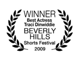
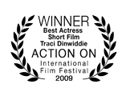

FESTIVALS & AWARDS
Awards
- American Film Institute
- Jean Picker Firstenberg Award for Excellence DWW 2008
- Palm Springs International ShortFest 2008
- Anchorage International Film Festival 2008
- Canada International Film Festival 2009
- Beverly Hills Shorts Festival 2009
- Vail Film Festival 2009
- 42nd Annual Humboldt Film Festival 2009
- West Chester Film Festival 2009
- 42nd WorldFest-Houston International Film Festival 2009
- Santa Cruz Film Festival 2009
- Iowa Independent Film Festival 2009
- Action on Film International Film Festival 2009
- Mexico International Film Festival 2009
- 21st Internationales Festival des Nichtkommerziellen Films 2009
- British Film Festival, Los Angeles 2009
- Best Student Film
- Best Actress in a Short Film - Traci Dinwiddie
- 11th Annual Milwaukee Short Film Festival 2009
- Blue Water Film Festival 2009
- 16th WOW Film Festival
- The Baltimore Women's Film Festival 2009
- International Student Film Festival Hollywood 2009
- 10th TOTI International Festival of Non-Commercial Film Maribor 2009, Slovenia
- Asheville Film Festival 2009
- Red Rock Film Festival 2009
- Trail Dance Film Festival 2010
- Durango Independent Film Festival 2010
- Heart of Gold International film Festival 2010
Nominations
- Grand OFF Awards 2009
- Milan International Film Festival 2009
- Method Fest Independent Film Festival 2009
- Little Rock Film Festival 2009
- Action on Film International Film Festival 2009
- British Film Festival, Los Angeles 2009
- Best Supporting Actress Short Film - Suzy Nakamura
- Trail Dance Film Festival 2010
Upcoming Festivals
- 16th WOW Film Festival Tour - Tour dates throughout 2009 - 2010
Complete Festival List
- LA Shorts Fest - August, 2008
- Palm Springs International ShortFest - August, 2008
- Montreal World Film Festival, Canada - August, 2008
- Temecula Valley International Film Festival - September, 2008
- 14th Annual Cucalorus Film Festival - November, 2008
- Breast Feast Film Festival, Canada - November, 2008
- Anchorage International Film Festival - December, 2008
- Spokane International Film Festival - February, 2009
- Canada International Film Festival - February, 2009
- Omaha Film Festival - February, 2009
- Beverly Hills Shorts Festival - February, 2009
- Women in Film Festival, Canada - March, 2009
- San Luis Obispo International Film Festival - March, 2009
- Roma Independent Film Festival, Italy - March, 2009
- 33rd Cleveland International Film Festival - March, 2009
- Female Eye Film Festival, Canada - March, 2009
- Sacramento International Film Festival - March, 2009
- Reel Women International Film Festival - March, 2009
- Method Fest Independent Film Festival 2009 - March, 2009
- Lake Arrowhead Film Festival - April, 2009
- Vail Film Festival - April, 2009
- Garden State Film Festival - April, 2009
- Tallahassee Film Festival - April, 2009
- 40th Nashville Film Festival - April, 2009
- 42nd Annual WorldFest-Houston International Film Festival - April, 2009
- 42nd Annual Humboldt Film Festival - April, 2009
- 51st Rochester International Film Festival - April, 2009
- West Chester International Short Film Festival - April, 2009
- Newport Beach Film Festival - April, 2009
- British Film Festival, Los Angeles - May, 2009
- Santa Cruz Film Festival - May, 2009
- Milan International Film Festival, Italy - May,2009
- Little Rock Film Festival - May, 2009
- EuroAsia Shorts Film Festival - June, 2009
- 37th Festival of Nations, Austria - June, 2009
- Southside Film Festival - June, 2009
- NewFilmmakers - July, 2009
- Jersey Shore Film Festival - July, 2009
- Iowa Independent Film Festival - July, 2009
- Action on Film International Film Festival - July, 2009
- CINEFIESTA 2009, Puerto Rico - July, 2009
- 21st Internationales Festival des Nichtkommerziellen Films, Austria - August, 2009
- 11th Annual Milwaukee Short Film Festival - September, 2009
- Route 66 Film Festival - September, 2009
- Raindance Film Festival, United Kingdom - October,2009
- "Boob Tube" to Benefit the Pink Ribbons Project - October, 2009
- BendFilm Festival - October, 2009
- Indie Memphis Film Festival - October, 2009
- Blue Water Film Festival - October, 2009
- 16th WOW Film Festival, Australia - October, 2009
- New Hampshire Film Festival - October, 2009
- The Baltimore Women's Film Festival - October, 2009
- 7th International Short Film Festival "Wie wir leben!/The Way We Live!", Germany - November, 2009
- River's Edge International Film Festival - November, 2009
- Filmstock, United Kingdom - November, 2009
- International Student Film Festival Hollywood - November, 2009
- 57th Columbus International Film + Video Festival - November,2009
- Asheville Film Festival - November, 2009
- Lone Star International Film Festival - November, 2009
- Red Rock Film Festival - November, 2009
- Grand OFF Awards & Festival, Poland - November, 2009
- Trail Dance Film Festival - January, 2010
- 32nd Big Muddy Film FestivalFebruary, 2010
- 16th Sedona International Film Festival - February, 2010
- Durango Independent Film Festival - March, 2010
- Detroit Independent Film Festival - March, 2010
- Heart of Gold International Film Festival, Australia - March, 2010
- 16th WOW Film Festival Tour - Tour dates throughout 2009 - 2010




